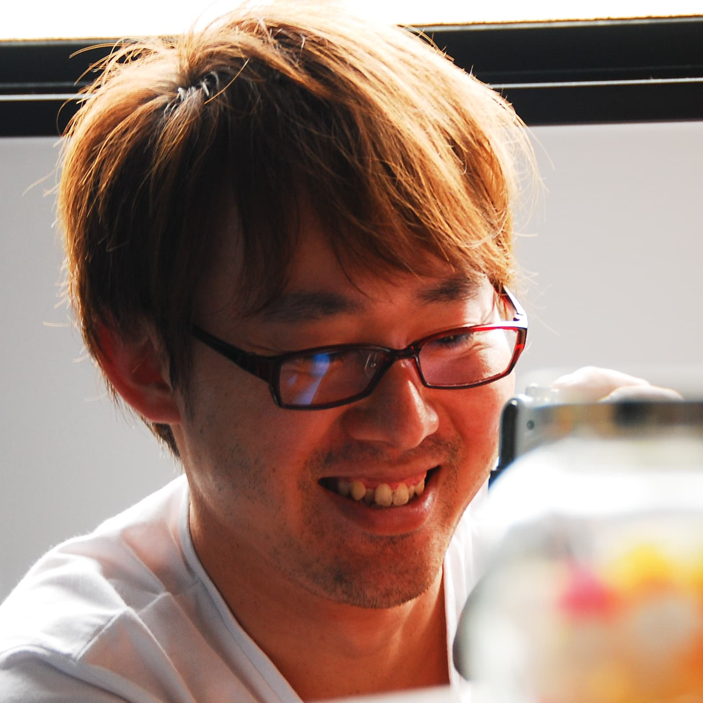

<aside class="side">
  <section class="side-profile">
    <h2 class="side-profile__title">プロフィール</h2>
    <div class="side-profile__body">
      <figure class="side-profile__avatar">
        
      </figure>
      <p class="side-profile__name">庄司 諭史</p>
      <div class="side-profile__desc">
        <p>三重県出身、大阪府在住。</p>
        <p>大学を卒業後、システムエンジニアを経て、ウェブ業界に転身。2021年9月に「ウェブ解析士」を取得。</p>
        <p>現在は、フロントエンドの技術を磨きながら、アクセス解析・マーケティングについても勉強中。</p>
        <p>趣味は古民家カフェに行くこと。</p>
      </div>
      <ul class="side-profile__sns-list">
        <li>
          <a href="https://twitter.com/satoyan419" target="_blank" rel="noopener">
            <svg role="img" aria-labelledby="title-twitter"><title id="title-twitter">Twitter</title><use href="#ico-twitter"></use></svg>
          </a>
        </li>
        <li>
          <a href="https://twitter.com/satoyan419" target="_blank" rel="noopener">
            <svg role="img" aria-labelledby="title-instagram"><title id="title-instagram">Instagram</title><use href="#ico-instagram"></use></svg>
          </a>
        </li>
      </ul>
    </div>
  </section>
  <!-- /.profile -->
</aside>